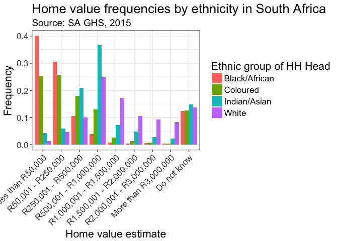
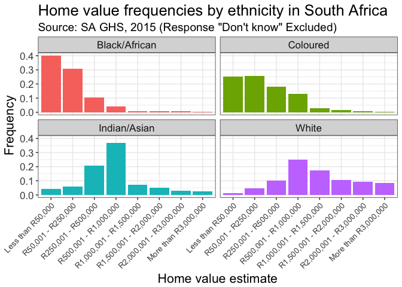
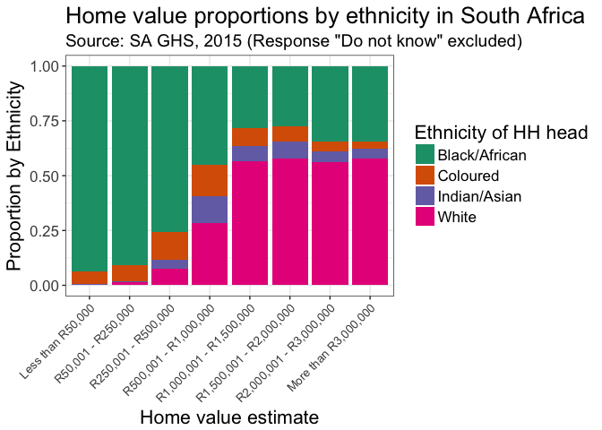

SAIRR Check
I saw the report by SAIRR (2017) and used by a friend in a Facebook discussion (you can get the report here). I didn’t believe the numbers he cited from the report, so I wanted to download the data and check them. The main data are from Africa (2016). I use packages by Wickham (2017) and Bray et al. (2016) for ease in this doc. Note, this isn’t meant to be a comprehensive fact check, just me not sure about numbers a friend was citing.
Data
The data can be obtained here: microdata.worldbank.org/index.php/catalog/2773/related_materials.
Import the data csv of the GHS 2015:
ghs15 <- read_csv("../data/ghs_2015_person_v1.1_20160608.csv")Wrangling
Wrangle the data and select the sample of 20 and older. Generate a variable that checks the proportion of people of each race that has Matric or higher. Also try to find out their error with another variable. Couldn’t quite get the same proportions they did, but I wasn’t trying too hard.
educ20 <-
ghs15 %>%
filter(Age > 19) %>%
mutate(matricmore = ifelse(Q15HIEDU %in% c(12, 13, 16,
17, 18, 19,
21, 22, 23,
24, 25, 26,
27, 28, 29),
1, 0),
matriconly = ifelse(Q15HIEDU %in% c(12, 13, 23)
, 1, 0),
race = factor(race, labels = c("Black/African",
"Coloured",
"Indian/Asian",
"White")))Summary Stats
Generate summary data frame. Note: I haven’t used the sampling weights here because I haven’t had the time to research them, they shouldn’t change the estimates too much just yet.
raceSum <-
educ20 %>%
group_by(race) %>%
summarise(matricprop = round(mean(matricmore), 3))
kable(raceSum, col.names = c("Race", "Proportion with at least Grade 12"))| Race | Proportion with at least Grade 12 |
|---|---|
| Black/African | 0.340 |
| Coloured | 0.347 |
| Indian/Asian | 0.667 |
| White | 0.802 |
Other tallies
Screwing around with some other tallies to check my work above.
mosaic::tally(~Q15HIEDU, data = educ20)## Q15HIEDU
## 0 1 2 3 4 5 6 7 8 9 10 11
## 97 332 460 699 1029 1039 1504 2287 2860 3055 5089 5250
## 12 13 14 15 16 17 18 19 20 21 22 23
## 10664 820 49 110 188 136 106 152 111 130 814 1823
## 24 25 26 27 28 29 30 31 98 99
## 491 169 1150 184 335 215 157 425 2804 185mosaic::tally(~race, data = educ20)## race
## Black/African Coloured Indian/Asian White
## 35666 4397 1215 3641mosaic::tally(~matricmore, data = educ20)## matricmore
## 0 1
## 27542 17377mosaic::tally(~matricmore | race, data = educ20, format = "percent")## race
## matricmore Black/African Coloured Indian/Asian White
## 0 66.01806 65.29452 33.33333 19.77479
## 1 33.98194 34.70548 66.66667 80.22521Housing
For housing I need to read in the household data.
ghs15hh <- read_csv("../data/ghs_2015_house_v1.1_20160608.csv")## Parsed with column specification:
## cols(
## .default = col_integer(),
## uqnr = col_double(),
## personnr = col_character(),
## psu = col_double(),
## house_wgt = col_double()
## )
## See spec(...) for full column specifications.mosaic::tally(~Q56Owner | head_popgrp, data = ghs15hh, format = "percent")## head_popgrp
## Q56Owner 1 2 3 4
## 1 19.3511732 15.8665105 20.9803922 23.9057239
## 2 1.4430998 4.5081967 2.3529412 3.5914703
## 3 2.9316516 9.9531616 19.0196078 23.8496072
## 4 0.6874609 1.0538642 1.3725490 3.2547699
## 5 59.4511675 51.5222482 51.5686275 40.7407407
## 6 14.4423612 16.1007026 3.5294118 3.1986532
## 7 1.3976479 0.7025761 0.3921569 1.1223345
## 8 0.2954378 0.2927400 0.7843137 0.3367003mosaic::tally(~Q58Val | head_popgrp, data = ghs15hh, format = "percent")## head_popgrp
## Q58Val 1 2 3 4
## 1 39.7704676 25.0000000 4.3137255 1.3468013
## 2 30.3278223 25.4098361 5.8823529 4.6015713
## 3 10.4596330 17.8571429 20.7843137 10.0448934
## 4 3.9202318 12.9391101 36.4705882 24.6352413
## 5 0.8635873 2.6932084 7.2549020 17.1156004
## 6 0.5056531 1.3466042 4.9019608 10.6060606
## 7 0.5681495 0.7611241 2.7450980 9.1470258
## 8 0.4999716 0.4683841 2.3529412 8.2491582
## 9 12.2833930 12.5878220 14.7058824 13.6363636
## 99 0.8010908 0.9367681 0.5882353 0.6172840Wrangling HH data
I need to generate new variables to create the proportions of the different home values by race.
ghshhval <-
ghs15hh %>%
filter(Q58Val != 99) %>%
select(head_popgrp, Q58Val)
hhcounts <-
ghshhval %>%
group_by(head_popgrp) %>%
summarise(n = n())
hhval <-
ghshhval %>%
group_by(Q58Val, head_popgrp) %>%
summarise(count = count(head_popgrp)) %>%
left_join(hhcounts) %>%
ungroup %>%
mutate(freq = count / n,
Q58Val = factor(Q58Val,
labels = c("Less than R50,000",
"R50,001 - R250,000",
"R250,001 - R500,000",
"R500,001 - R1,000,000",
"R1,000,001 - R1,500,000",
"R1,500,001 - R2,000,000",
"R2,000,001 - R3,000,000",
"More than R3,000,000",
"Do not know")),
head_popgrp = factor(head_popgrp, labels = c("Black/African", "Coloured", "Indian/Asian",
"White")))## Joining, by = "head_popgrp"Plotting the hh values
I now plot the wrangled data in ggplot():
hhplot <-
hhval %>%
ggplot(aes(x = Q58Val, y = freq, group = head_popgrp, fill = head_popgrp)) +
geom_bar(stat = "identity", position = "dodge") +
xlab("Home value estimate") +
ylab("Frequency") +
scale_fill_discrete(name = "Ethnic group of HH Head") +
labs(title = "Home value frequencies by ethnicity in South Africa",
subtitle = "Source: SA GHS, 2015") +
theme_bw() +
theme(axis.text.x = element_text(angle = 45, hjust = 1),
text = element_text(size = 16))
hhplot
I need to export the file to jpeg to post to FB.
jpeg(file = "hhplot_sa_ghs15.jpg", width = 640, height = 480, units = "px")
hhplot
dev.off()## quartz_off_screen
## 2hhplot2 <-
hhval %>%
filter(Q58Val != "Do not know") %>%
ggplot(aes(x = Q58Val, y = freq, fill = head_popgrp)) +
geom_bar(stat = "identity", position = "dodge") +
xlab("Home value estimate") +
ylab("Frequency") +
#facet_grid(. ~head_popgrp, scales = "free") +
facet_wrap(~ head_popgrp) +
scale_fill_discrete(guide = FALSE) +
#scale_fill_discrete(name = "Ethnic group of HH Head") +
labs(title = "Home value frequencies by ethnicity in South Africa",
subtitle = "Source: SA GHS, 2015 (Response \"Don't know\" Excluded)") +
theme_bw() +
theme(text = element_text(size = 16),
axis.text.x = element_text(angle = 45, hjust = 1, size = 10)
)
hhplot2
jpeg(file = "hhplot_sa_ghs15_facet.jpg", width = 640, height = 480, units = "px")
hhplot2
dev.off()## quartz_off_screen
## 2Household stacked bar
Alana requested some analysis indicating the extent to which different values corresponded (or failed to correspond) to the population proportions of the country as a whole. I thought a stacked bar chart would convey some of the intuitions of that as one could observe the extent to which there are deviations from the proportions of each ethnicity in the country.
hplot <-
hhval %>%
filter(Q58Val != "Do not know") %>%
ggplot(aes(fill = head_popgrp, y = count, x = Q58Val)) +
geom_bar(stat = "identity", position = "fill") +
xlab("Home value estimate") +
ylab("Proportion by Ethnicity") +
scale_fill_brewer(type = "qual",
palette = "Dark2",
name = "Ethnicity of HH head") +
labs(title = "Home value proportions by ethnicity in South Africa",
subtitle = "Source: SA GHS, 2015 (Response \"Do not know\" excluded)") +
theme_bw() +
theme(text = element_text(size = 16),
axis.text.x = element_text(angle = 45, hjust = 1, size = 10)
)
hplot
ggsave(file = "hhplot_value_stacked_ethncity.png", width = 8, height = 6, units = c("in"), dpi = 300,)License

This work is licensed under a Creative Commons Attribution-NonCommercial 4.0 International License.
References
Africa, Statistics South. 2016. “South African General Household Survey, 2015, V. 1.0 [Machine-Readable Database].”
Bray, Andrew, Mine Cetinkaya-Rundel, Albert Y. Kim, Ben Baumer, and Chester Ismay. 2016. Oilabs: R Package Companion to Openintro Labs.
SAIRR. 2017. “Auditing Racial Transformation.” South African Institute of Race Relations, Fast Facts, No 1. January, Issue 305.
Wickham, Hadley. 2017. Tidyverse: Easily Install and Load ’Tidyverse’ Packages. https://CRAN.R-project.org/package=tidyverse.